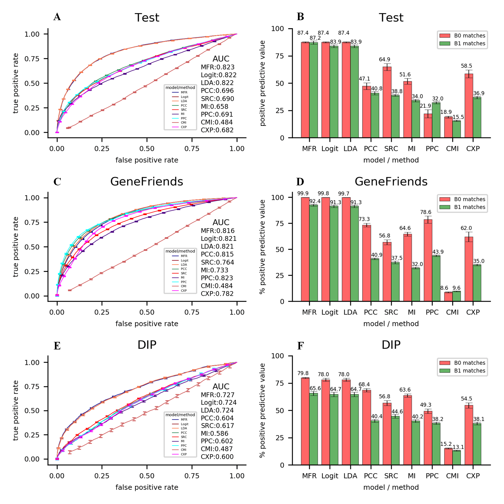

Intro
Measuring conditional relatedness between a pair of genes is a fundamental technique and still a significant challenge in computational biology. Traditionally, such relatedness can be assessed using expression similarities. However, they are known for high false positive rates. Also, the other type of features, prior-knowledge based similarities, is only viable for measuring global relatedness.
To solve the problem, we propose a novel machine learning model for accurately measuring conditional relatedness between a pair of genes, by integrating expression similarities and prior-knowledge based similarities in an assessment criterion: Multi-Features Relatedness (MFR). Only gene pairs with both high expression similarities and high prior-knowledge based similarities will be kept and recommended by our model. Intuitively, this fits a multi-objective regression problem. We use SVM with linear kernel to effectively solve this regression problem, after transforming it to a single-objective generalized linear logit regression problem with the following hypotheses: (i) fitting of relatedness supported by expression similarities is equal to fitting of relatedness supported by prior-knowledge based similarities; (ii) all features contribute to fitting on the same level; and (iii) the fitting target relatedness are 0/1 (non-interacting/interacting).
The results show that MFR wins the highest area under curve (AUC) value for identifying gene-gene interactions in development, test and DIP datasets, and specially obtains an improvement on average of precision for detecting gene pairs with both high expression similarities and high prior-knowledge based similarities in all datasets, comparing to other linear models and coexpression analysis methods. Regarding cancer gene network construction and gene function prediction, MFR model also obtains the results with more biological significances and higher average prediction accuracy, than other compared models and methods
Workflow
There are five major steps in the whole workflow of MFR model as shown in Figure 1, including (i) gene pair samples collected from three different databases and a benchmark dataset of a published study; (ii) gene features extraction from three databases for assessing similarity-based gene pair features; (iii) totally 12 similarity-based gene pair features calculation using four gene features and two databases; (iv) SVM-based model construction by 3-fold cross-validation, where our model is repeatedly trained by 60% gene pairs and developed by other 30% in 3*3 times; and (v) application of the developed model to detect gene-gene interactions in the rest 10% gene pairs and the other two verification datasets, construct cancer gene network, and predict gene function. The results are compared with other linear models and coexpression analysis methods.
Figure 1. workflow of MFR model
Results
MFR model is applied to predict (1) gene-gene interactions and (2) gene pairs with both high expression similarities and high prior-knowledge based similarities extracted from the COXPRESdb, KEGG and TRRUST databases and the dataset of Pan et al.'s study in a 3-fold cross validation (see Figure 2) and in a test the verification (see Figure 3 A-B), and identify (3) gene-gene interactions and (4) gene pairs with both high expression similarities and high prior-knowledge based similarities extracted from the geneFirends and DIP databases in further verification (see Figure 3 C-F). The results show that MFR wins the highest area under curve (AUC) value for identifying gene-gene interactions in development, test and DIP datasets, and specially obtains an improvement on average of precision for detecting gene pairs with both high expression similarities and high prior-knowledge based similarities in all datasets, comparing to other linear models and coexpression analysis methods. Regarding cancer gene network construction and gene function prediction, MFR model also obtains the results with more biological significances and higher average prediction accuracy, than other compared models and methods.
Fig 2. (A) ROCs of nine models or methods for identifying gene-gene interactions by 3-fold cross-validation. (B) Average PPVs of nine models or methods for detecting B0/B1 matched gene pairs by 3-fold cross-validation

Fig 3. ROCs of nine models or methods for identifying gene-gene interactions in the (A) test, (C) GeneFriends and (E) DIP datasets. Average PPVs of nine models or methods for detecting B0/B1 matched gene pairs in the (B) test, (D) GeneFriends and (F) DIP datasets
Fig 4. A number of metabolic pathways predicted to be directly influenced by increased glutamine and glutamate metabolism in four cancer types. These pathways were predicted in cancer gene networks, where nodes represent up-regulated metabolic genes and edges represent relatedness between genes, measured by five linear models and six coexpression analysis methods
Fig 5. Percentages of L0- and L1- matched selected genes in nine KEGG metabolic gene networks. In these networks, nodes represent genes involved in KEGG metabolism pathways, and edges represent relatedness between genes, measured by nine models or methods